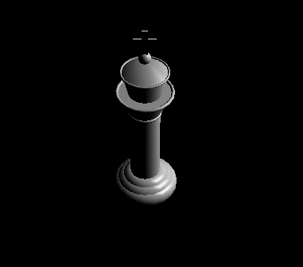

Anything not mentioned in this list was not attempted.
All images were generated with the command
Assignment3.exe --in test.ray --aa 1. --aa is
my custom parameter used to define the number of AA samples to take when
rendering each frame.
No notes. Fully implemented.
No notes. Fully implemented.
No notes. Fully implemented.
No notes. Fully implemented.
No notes. Fully implemented.
Fully implemented. See the light examples below for examples of materials without textures.
No notes. Fully implemented.
No notes. Fully implemented.
No notes. Fully implemented.
No notes. Fully implemented.
Fully implemented. See the examples above and below for every object with texture mapping implemented.
No notes. Fully implemented.
No notes. Fully implemented.
No notes. Fully implemented.
No notes. Fully implemented.
No notes. Fully implemented.
No notes. Fully implemented.
No notes. Fully implemented.
No notes. Fully implemented.
No notes. Fully implemented.
Fully implemented. The implementation details come from the OpenGL
reference manual and are implemented under
Scene::drawOpenGL.
--in scene.ray
While textures in the scene were taken from Google Images, everything is hand-modeled by myself. There is a chess board, a table, 2 marble seats, 6 torches, 4 walls, a floor, and a ceiling (which is simply an image of the stars). Each torch acts as a light source with a point light embedded inside of it. The walls, floor, ceiling, torches, sconces, table, and seats each use a texture. The chess board uses two (the squares and border). This totals 9 different textures.
Here are images of the individual furnishings.
--in chess_room.ray
My art submissions are chess_room.ray and an image of the
resulting render. chess_room.ray is simply a modified
version of scene.ray. The only modification from the
original scene is that 2 torches were removed so the camera could have
an unobstructed view into the scene (otherwise it would see the backside
of them).